Phase 1 · Current
Infrastructure and telemetry foundation
Deploy segmented VMs, validate domain services, run Conpot, generate Modbus traffic, and capture baseline telemetry.
Project Janus builds a small, script-driven purple-team lab that automates a mapped adversary attack, collects the resulting telemetry, and uses a large language model to generate detection rules and a threat-intelligence report. It then closes the loop by automatically blocking the attacker when a detection rule fires.
This release documents the infrastructure and telemetry foundation completed during the first phase. Automated attack execution, LLM-assisted analytics, detection generation, and automatic response remain later-phase objectives.
pfSense acts as the routed security boundary between an IT network, an OT network, and a dedicated attacker network. WAN connectivity is isolated behind the firewall, while policy controls govern movement between internal segments.
| System | OS | Address | Role |
|---|---|---|---|
| Windows Server | Windows Server 2025 | 10.10.10.10/24 | Active Directory, DHCP, and administration for the IT environment |
| pfSense Firewall | FreeBSD-based pfSense | 10.10.10.1 · 10.10.20.1 · 10.10.30.1 | Stateful firewall, routing, segmentation, and WAN access |
| SCADA Honeypot | Linux Mint | 10.10.20.10/24 | Conpot-based ICS/SCADA emulation and adversary telemetry collection |
| Modbus Traffic Generator | Linux Mint | 10.10.20.30/24 | Generates representative Modbus traffic for OT validation |
| Linux Attacker | Kali Linux | 10.10.30.10/24 | Dedicated adversary host for future Sandworm-inspired simulations |
| Windows Endpoint | Windows 11 Enterprise | DHCP (shown: 10.10.10.3) | Domain-joined user workstation within the IT environment |
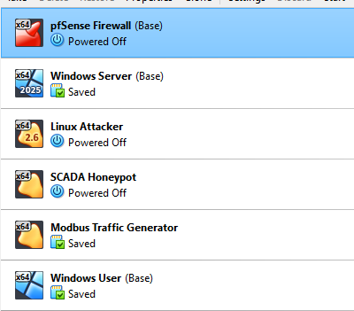
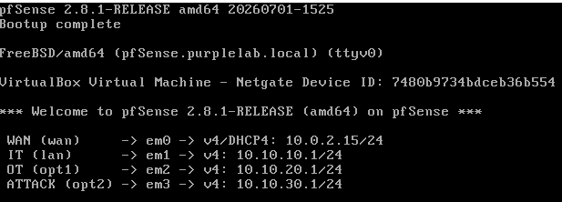
Rules are placed on the interface where traffic enters pfSense. IT and OT are prevented from initiating cross-segment traffic, while the attacker network receives only narrowly scoped access required for controlled testing.
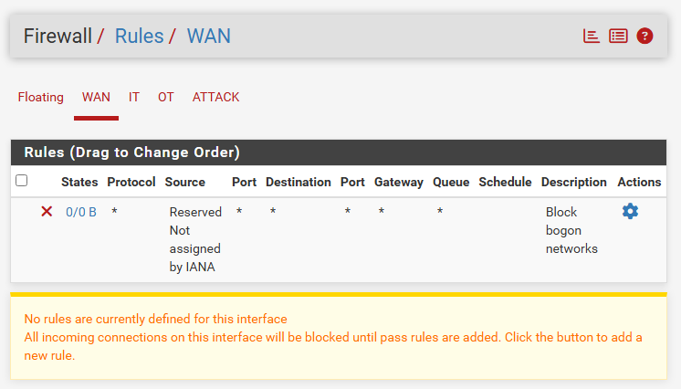
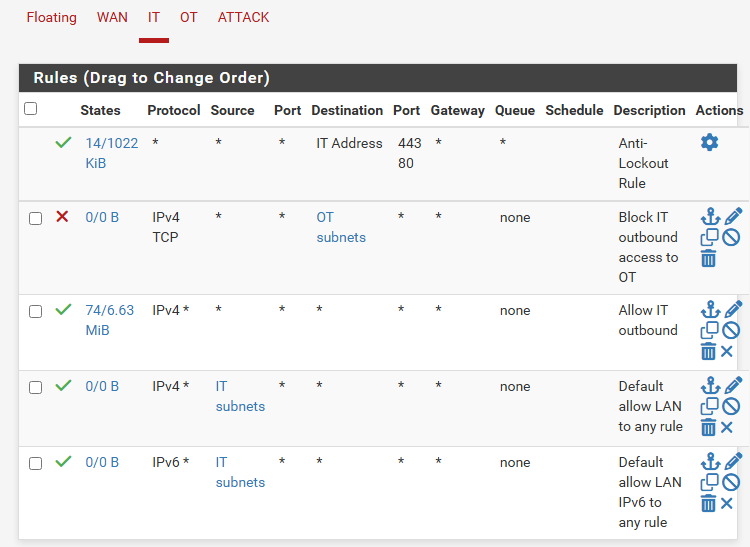
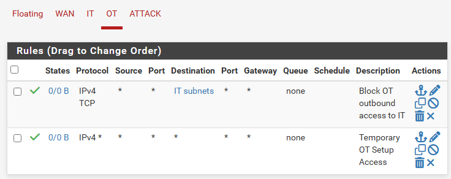
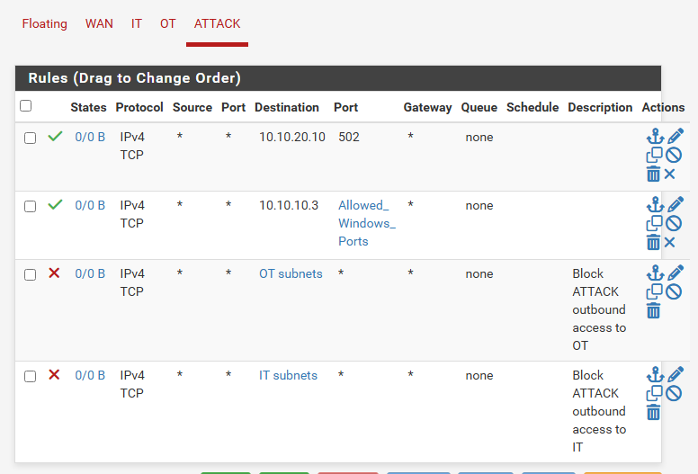
Windows Server provides Active Directory, DNS, and DHCP services for the IT network. The Windows 11 endpoint successfully received a lease, resolved the lab domain, reached both the server and gateway, joined purplelab.local, and authenticated as a domain user.
10.10.10.10/24, the pfSense IT gateway 10.10.10.1, and its local DNS resolver at 127.0.0.1. DHCP distributes the server as DNS and pfSense as the default gateway to the Windows client.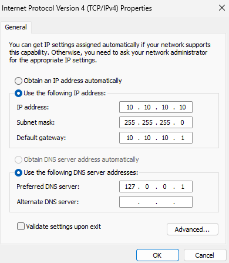
10.10.10.10/24 with 10.10.10.1 as its default gateway and localhost as its DNS resolver.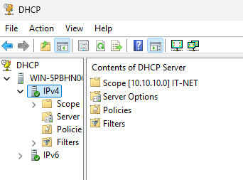
10.10.10.0/24 network.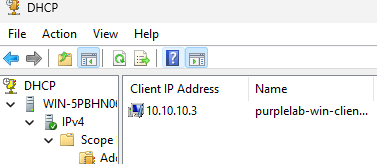
10.10.10.3 from Windows Server.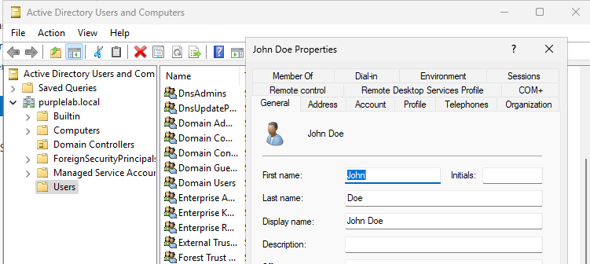
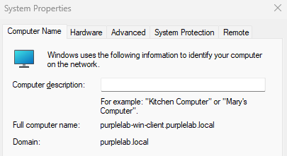
purplelab.local.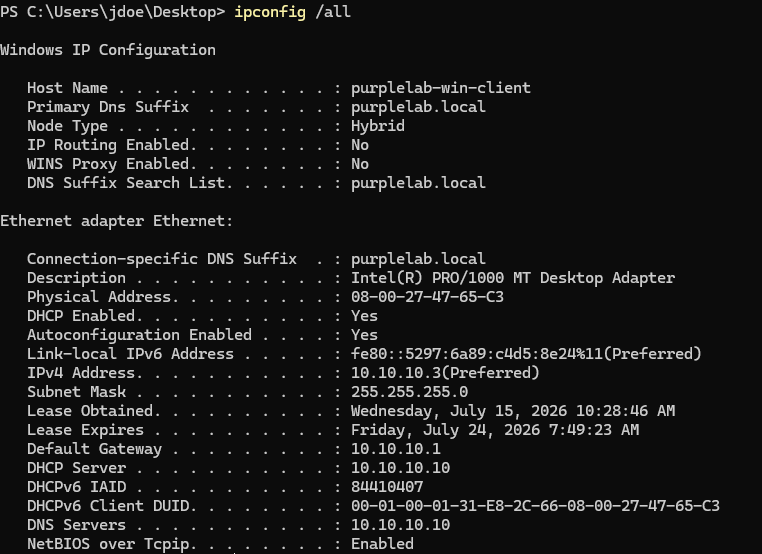
10.10.10.3/24, gateway 10.10.10.1, and DHCP/DNS server 10.10.10.10.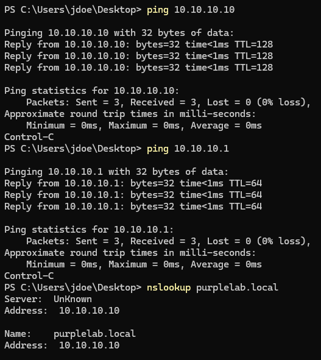
purplelab.local resolved to 10.10.10.10.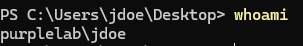
whoami confirms the user session is authenticated as purplelab\jdoe.Conpot runs in a container on Linux Mint and emulates common industrial protocols. Modbus is enabled for this phase, providing a controlled target for realistic OT traffic and future adversary activity.
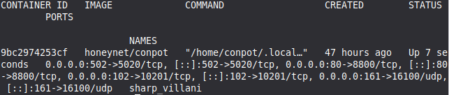
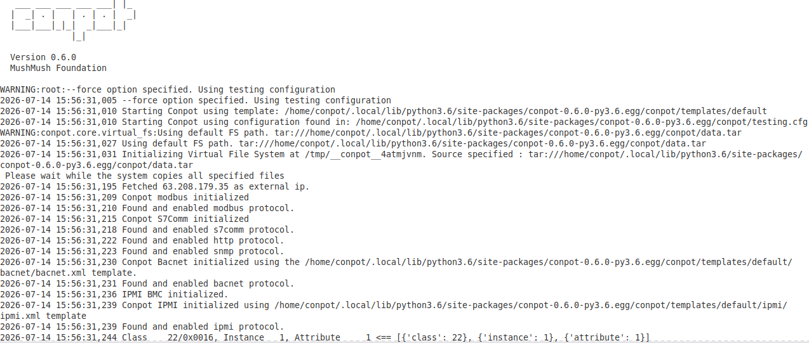
A Python script uses PyModbus to connect to the Conpot service every five seconds and read holding registers. Successful responses, packet capture, and Conpot logs confirm an end-to-end telemetry path.
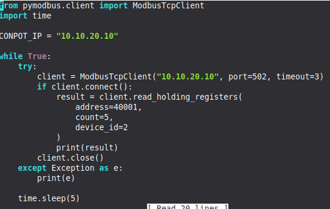
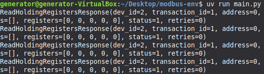
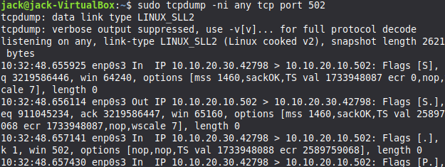
tcpdump records bidirectional sessions between 10.10.20.30 and 10.10.20.10 on TCP/502.Initial research maps techniques associated with Sandworm's 2022 electric-sector campaign to MITRE ATT&CK and ATT&CK for ICS tactics. This mapping will guide controlled scripts and identify telemetry requirements for later detection engineering.
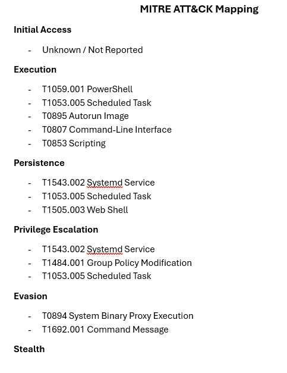
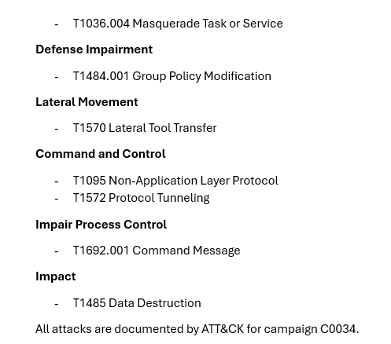
| Capability | Status | Evidence |
|---|---|---|
| DHCP, DNS, and Active Directory | Complete | Static server configuration, lease issuance, DNS resolution, and test-user creation validated |
| Windows domain membership | Complete | Endpoint joined to purplelab.local and authenticated as purplelab\jdoe |
| pfSense interfaces and routing | Complete | Three gateways configured and hosts reach their local gateway |
| Firewall segmentation | Complete | Rules defined; OT block action should be revalidated |
| Conpot Modbus service | Complete | Container running with Modbus enabled |
| Modbus generator | Complete | Repeated register-read responses |
| Packet and host logging | Complete | TCP/502 traffic and Conpot startup/activity captured |
| Kali attacker baseline | Complete | Static address and gateway connectivity validated |
| Sandworm mapping | In progress | Initial tactic and technique mapping drafted |
| Windows Sysmon | Planned | Deferred to monitoring and detection phase |
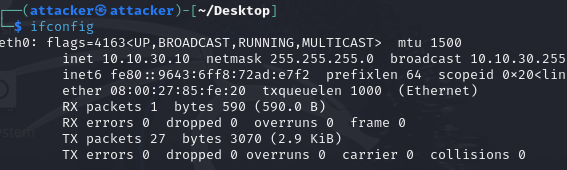
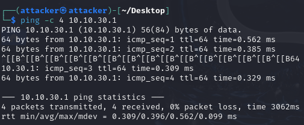
Deploy segmented VMs, validate domain services, run Conpot, generate Modbus traffic, and capture baseline telemetry.
Deploy Sysmon, standardize log collection, preserve synchronized test windows, and centralize telemetry for analysis.
Convert selected Sandworm techniques into safe, repeatable scripts that execute from the ATTACK network against approved lab targets.
Provide collected telemetry and mapped context to an LLM to draft detection rules and a threat-intelligence report, followed by human validation.
Trigger an automated pfSense block when a validated rule fires, then measure whether the attacker is contained without disrupting expected lab traffic.
IT: 10.10.10.0/24 gateway 10.10.10.1 OT: 10.10.20.0/24 gateway 10.10.20.1 ATTACK: 10.10.30.0/24 gateway 10.10.30.1 Conpot: 10.10.20.10:502 Generator: 10.10.20.30 Attacker: 10.10.30.10
sudo tcpdump -ni any tcp port 502
Use synchronized start and stop timestamps for each test and preserve packet, Conpot, and Linux logs under a consistent test identifier.